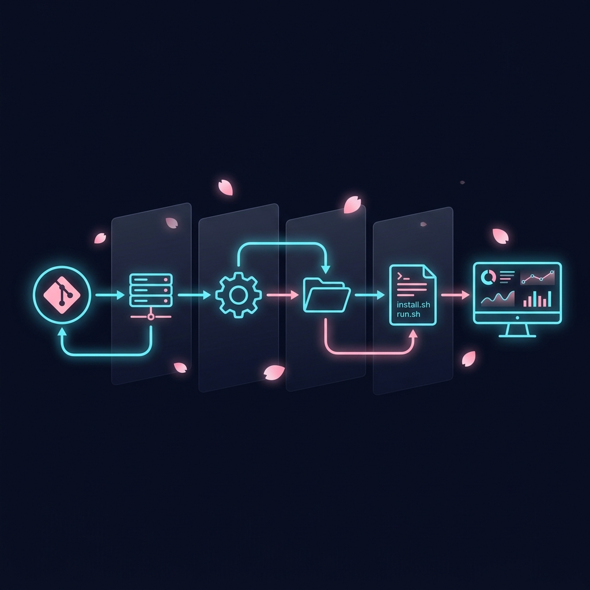

Architecture Deep Dive
Understand how the inner components of CICD connect, secure, run, and monitor your deployments.
Under the Hood
CICD operates as a single, lightweight orchestrator. It manages the entire process from accepting incoming git push webhooks to downloading dependencies, building, sandboxing, and tailing logs of multiple applications.

Visual flow of the CICD Deployment Pipeline
1. The Deployment Pipeline
Every time a commit is pushed to your Git repository, the following step-by-step pipeline executes automatically:
Webhook POST & Security Handshake
Your Git host (GitHub/GitLab) sends a JSON POST payload to the orchestrator listening port (default: 9641). If a --webhook-secret was set, CICD verifies the payload authenticity using the X-Hub-Signature-256 header and a local HMAC-SHA256 handshake. Unauthorized requests are instantly rejected.
Project Mapping & Branch Filter
CICD looks up the project in its local SQLite database (located at the hardcoded path /etc/cicd/data/cicd.db) using the incoming repository URL. If found, it validates the payload branch against the configured branch (e.g., refs/heads/main). Mismatched branches are safely ignored.
Pin Check Bypass
If the project has been "pinned" to a specific commit (using the dashboard or cicd pin), CICD records the new commit in the database history but skips starting the build pipeline to protect your active environment.
Queue Enqueueing (First-In, Single-Active)
To avoid race conditions and CPU thrashing, CICD has a per-project deployment queue. If a deployment is already running for a project, the new deployment is placed in a single-slot buffer. If multiple new commits arrive while a build is running, intermediate commits are discarded and only the latest commit wins.
Sync Repository (Safe Pull)
CICD changes directory to the project's sandboxed path, resets tracked changes to HEAD to clear any local modifications, fetches the latest commits, and resets hard to the origin branch tip.
Install & Download Phase
If .cicd/install.sh exists, the orchestrator checks its SHA256 hash. If it matches the previously run hash, it is skipped. If not, it grants temporary, limited NOPASSWD sudo access to the service user, executes the install script with a timeout (default 30 min), and updates the cached hash.
Run & Compilation Phase
CICD detects if any pre-existing process is listening on your application's port and kills it to prevent port binding collisions. It then starts the application via .cicd/run.sh under the sandboxed service user context. The compilation/build steps (like npm run build or go build) run inside this phase, ensuring new code gets built on every webhook pull.
Post-Deploy Health Check & Auto-Rollback
CICD waits for 15 seconds to let the application stabilize. It then executes .cicd/health.sh (or verifies the PID/restarts if no script is present). If the check passes, the deployment is marked success. If it fails, CICD automatically rolls back the environment to the previous stable commit.
2. Security & Privilege Sandboxing
CICD never runs your application code as root. Running untrusted web hooks as root opens severe remote code execution (RCE) vectors.
To keep your VPS safe, CICD implements a strict privilege-dropping system model:
- Unique Service Accounts: When a project is created, CICD automatically provisions a dedicated system user (e.g.
cicd_usr_my-api-a1b2c3) with no shell access. - Privilege Dropping (setuid/setgid): The background Go process launcher drops system privileges to the service account UID/GID before starting
run.sh. - Temporary Build Escalation: During
install.sh, if sudo commands are needed, a secureSUDO_ASKPASSJIT setup grants NOPASSWD access strictly for the duration of the installation phase, and tears it down immediately after. - Owner Lock: The orchestrator recursively aligns file permissions (including
.git/, lockfiles, and `app.pid`) to the project's sandboxed user to prevent permission escalation or file access collision.
3. Real-Time Telemetry & Watchdogs
Observability in the Command Center is powered by real-time streams:
- SSE Event Streams: The dashboard doesn't pull or poll. It opens a Server-Sent Events (SSE) stream to
/api/stream/fleet. The server broadcasts JSON status payloads containing real-time CPU/Memory usage, active listening ports, and system uptimes every 3 seconds. - Active Watching: If the application runs in background mode (like PM2 or Tmux), the Go process engine tails the PID written to
$CICD_PID_FILE. - health.sh Watchdog Loop: For Tier 4 (external/Docker daemon) applications where no static PID can be tracked, CICD runs a persistent 30-second background watchdog loop running
.cicd/health.sh. If it exits non-zero, it transitions SQLite status to failed and starts crash backoff recovery.
4. Fleet Sync via MongoDB Atlas
Managing multiple VPS servers? Simply configure a shared MongoDB Atlas connection string:
- Unified State: Each node logs its active state, deployments, and stats to a centralized MongoDB collection.
- Multi-Server Dashboard: The Command Center dashboard connects to this shared registry, showing the health and active commit of your entire VPS fleet in one single interface.